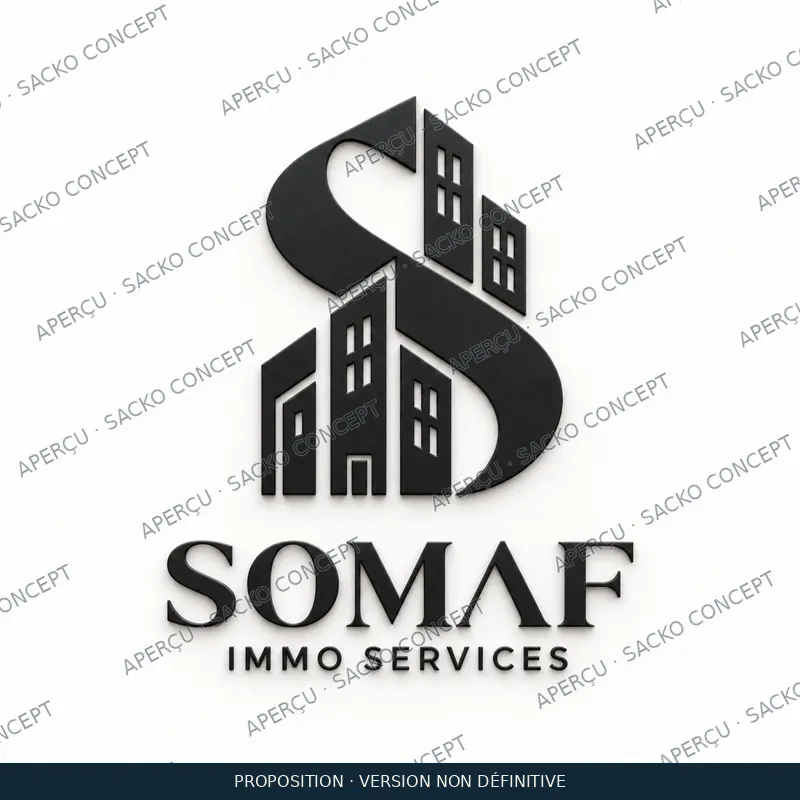
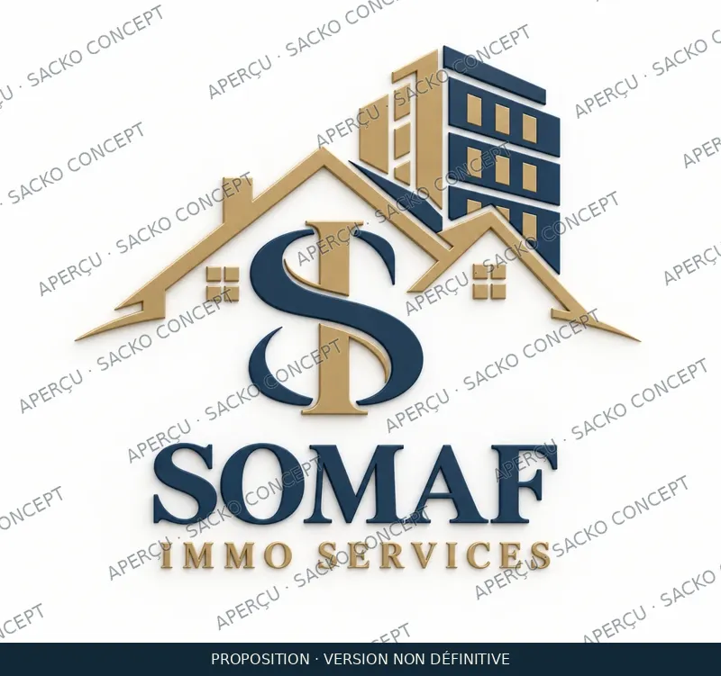
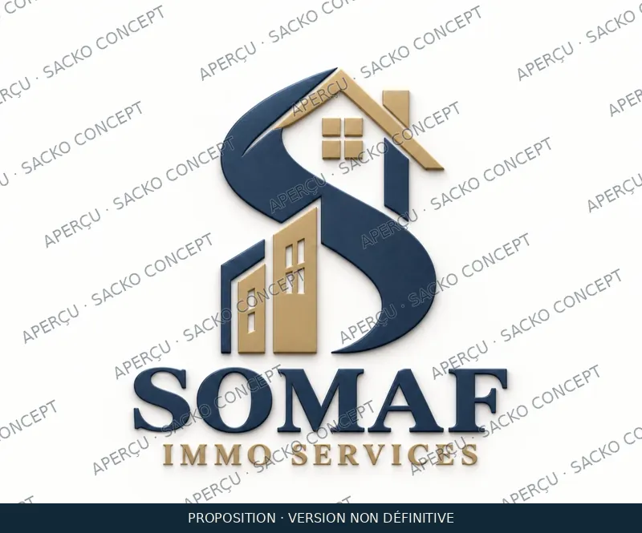
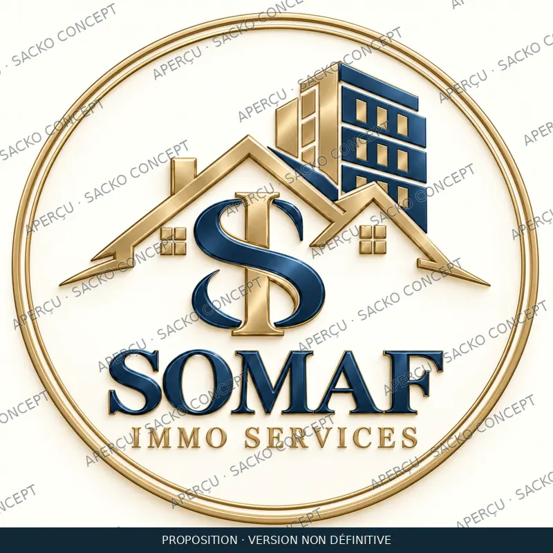

01 · Essentiel
Le S architectural, sobre et direct.
Choisir ce modèle →PROPOSITION PERSONNALISÉE · SOMAF IMMO SERVICES
Un logo reconnaissable. Une présence cohérente. Des supports utiles pour présenter vos biens et accompagner vos clients.
Découvrir les trois packs ↗Une proposition de SACKO CONCEPT, pensée pour votre activité immobilière.

Une signature visuelle claire pour votre agence.
Des supports cohérents pour valoriser vos offres.
Des modèles adaptés à vos échanges et à votre organisation.
TROIS DIRECTIONS VISUELLES
Aperçus filigranés pour validation. Les fichiers propres et les formats de livraison seront remis après validation et règlement selon le devis.

Le S architectural, sobre et direct.
Choisir ce modèle →
La maison intégrée au monogramme.
Choisir ce modèle →Une signature réunissant maisons et immeuble.
Choisir ce modèle →
UNE IDENTITÉ QUI VOUS ACCOMPAGNE
Logo principal, version monochrome et format circulaire : une même identité, adaptée à vos supports.
Voir ce que comprend chaque pack →